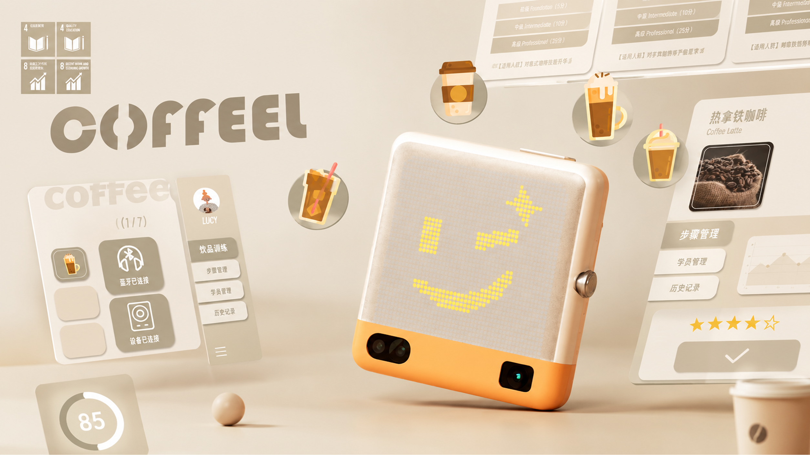
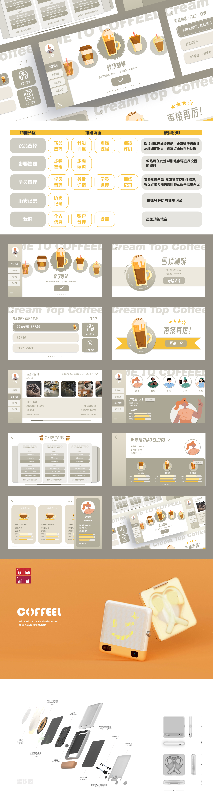

← 返回所有作品

PROJECT OVERVIEW / 项目概览
COFFEEL
COFFEEL 是一套面向视障人士的咖啡师就业培训系统设计。 项目从视障群体参与咖啡行业培训与就业过程中面临的操作识别、步骤学习和信息获取需求出发，探索将实体训练设备、教学端与数字界面结合的培训体验。系统围绕咖啡制作流程，通过步骤指导、训练记录与反馈等功能，帮助使用者更清晰地完成咖啡制作训练，同时为教学与管理提供相应的数字化支持。
个人负责内容
主要负责项目前期调研与资料梳理，参与视障群体咖啡培训及就业场景的需求分析；在方案阶段参与培训系统的整体设计与功能规划，并负责数字端 UI 界面的信息架构、功能页面与视觉呈现设计。
